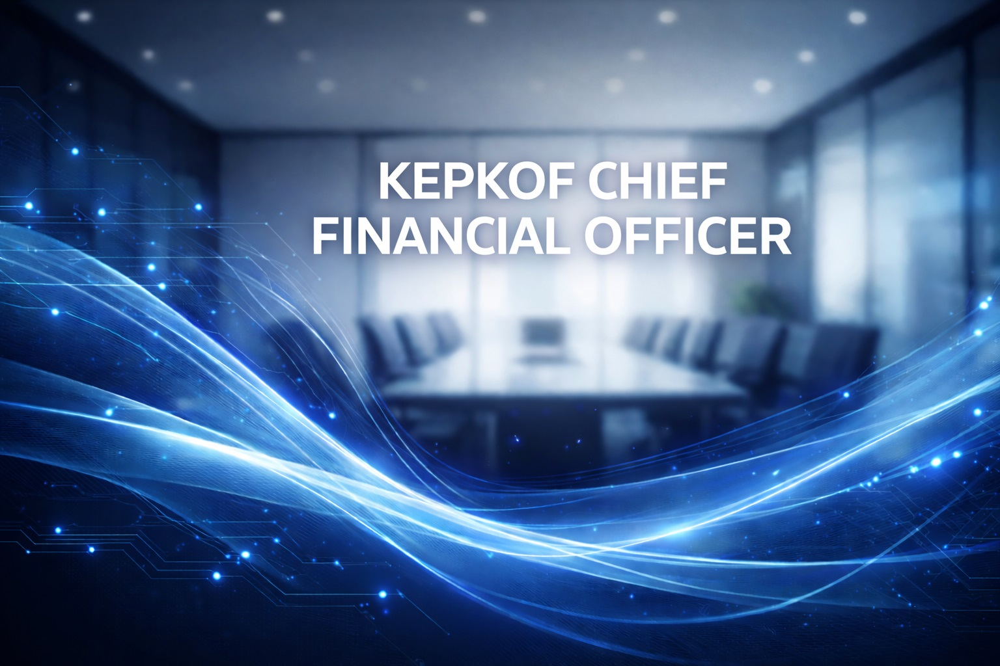

Strategic focus
Keeps strategic bets tied to measurable returns, balancing growth investments with strong cash management.
- Capital allocation playbook
- Forecasting excellence
- Partner confidence programs
Financial Stewardship
Chief Financial Officer
Guides capital allocation, planning, and investment discipline so the business can scale with confidence.

Keeps strategic bets tied to measurable returns, balancing growth investments with strong cash management.
Built a rolling forecasting model that preserved cash on hand while pushing for regional expansion.
Coaches finance and audit teams on modern analytics, ensuring the business gets fast insights and trusted controls.
Started as a financial analyst ensuring clean ledgers for retail partners.
Went on to lead budgeting and investor reporting for the electronics portfolio.
Stepped into the CFO role to guard long-term sustainability and profitable growth.
Builds finance rituals that keep the company responsive; cash, capital, and operating rhythm remain aligned to the plan.